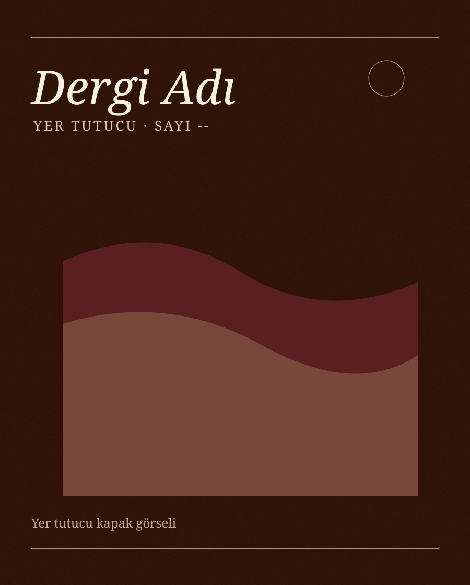
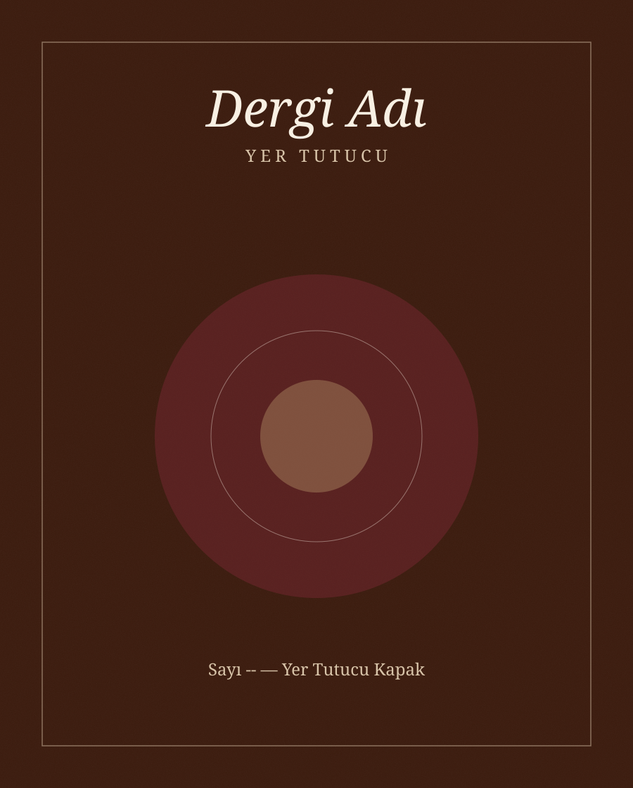
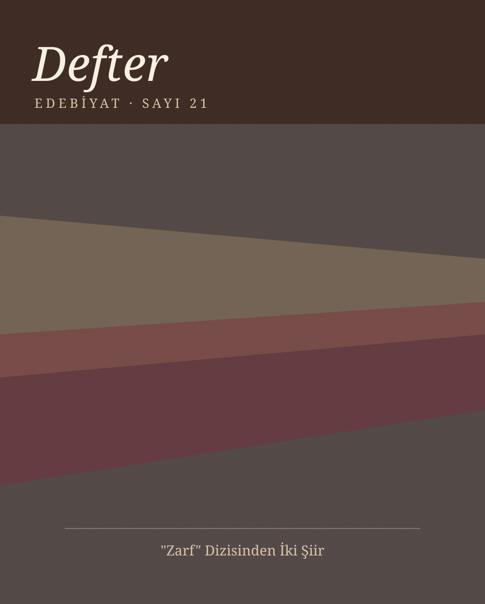
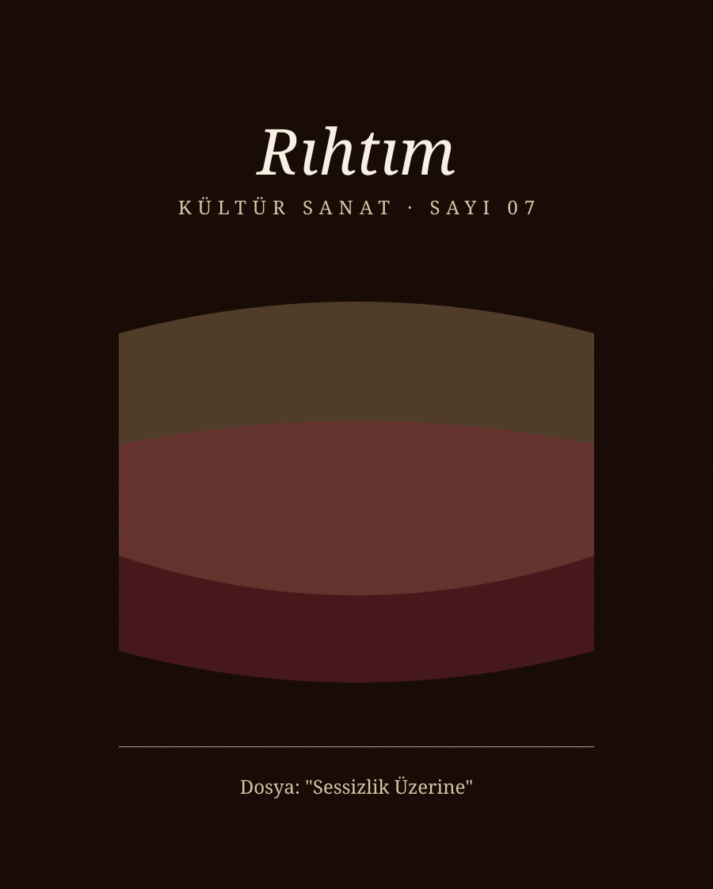

Dergiler ve Yön Verdiğim İşler
Bu sayfa yer tutucu içerikle hazırlanmıştır — gerçek projeler ve dergiler daha sonra eklenecektir.
Katkıda bulunduğum yayınlardan seçilmiş kapaklar buraya eklenecek. Bir görsele dokunun, ayrıntıları görün.




Yazarlığın dışında, konsept geliştirme, editöryel danışmanlık, iş birliği ya da yaratıcı yön verme rolüyle içinde bulunulan işler buraya eklenecek.
Proje Başlığı — Yer Tutucu 1
[Proje açıklaması ve Azra'nın rolü için yer tutucu metin — gerçek içerik daha sonra eklenecek.]
Yıl eklenecekProje Başlığı — Yer Tutucu 2
[Proje açıklaması ve Azra'nın rolü için yer tutucu metin — gerçek içerik daha sonra eklenecek.]
Yıl eklenecekProje Başlığı — Yer Tutucu 3
[Proje açıklaması ve Azra'nın rolü için yer tutucu metin — gerçek içerik daha sonra eklenecek.]
Yıl eklenecekBurada yer almasını istediğiniz bir dergi ya da proje mi var? Yazın, birlikte ekleyelim.
Benimle Çalışın